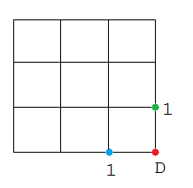
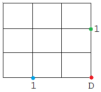
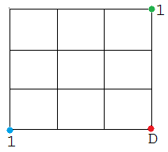
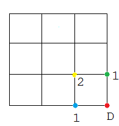
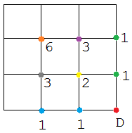

Problem 15: Lattice Paths
Starting in the top left corner of a 2×2 grid, and only being able to move to the right and down, there are exactly 6 routes to the bottom right corner. How many such routes are there through a 20×20 grid?

The Catch
Discover the pattern of lattice paths.
The Light
Take a look at a smaller version of this problem: 
If you start from the green point, there is only one way (marked as 1 next to the green point) to get to the destination D. Similarly, if you start from the blue point, there is also only one way to get to the destination. Now, let's move the positions of the green and blue points:
 It can be seen that no matter where you start on the bottom and right edge, there is only one way to reach the destination. Now, observe the following square. If you start from the yellow point, there are 2 ways to reach the destination.
Similarly in the square below, if you start from the purple or gray point, there are 3 ways to reach the destination. If you start from the orange point, there will be 6 ways. Notice that this is the 2 x 2 square mentioned in the problem's example.

The number of lattice paths from any point can be computed by adding the number of lattice paths from the point immediately to the right and below it. For instance, the number of lattice paths of the yellow point can be computed by adding the number of lattice paths of the green point immediately to the right and the blue point immediately below, so we have 1 + 1 = 2. Similarly, the number of lattice paths of the gray point can be computed by adding the number of lattice paths of the yellow point immediately to the right and the number of lattice paths of the blue point immediately below, so we have 2 + 1 = 3. The same method is used to compute 6, the number of lattice paths of the orange point, which is the top left corner point of a 2 x 2 square.
Apply this pattern for a 20 x 20 square. Use type long to store your answer as the combinatorial value will get very large.
The Code
public class Problem15
{
public static void main(String[] args)
{
int gridsize = 20;
long[][] grid = new long[gridsize + 1][gridsize + 1];
for( int x = 0; x < gridsize + 1; x++ )
{
for( int y = 0; y < gridsize + 1; y++ )
{
grid[gridsize][y] = 1;
grid[x][gridsize] = 1;
}
}
for( int x = gridsize - 1; x >= 0; x-- )
{
for( int y = gridsize - 1; y >= 0; y-- )
{
grid[x][y] = grid[x + 1][ y] + grid[x][ y + 1];
}
}
System.out.println("Top left grid = " + grid[0][0]);
}
}